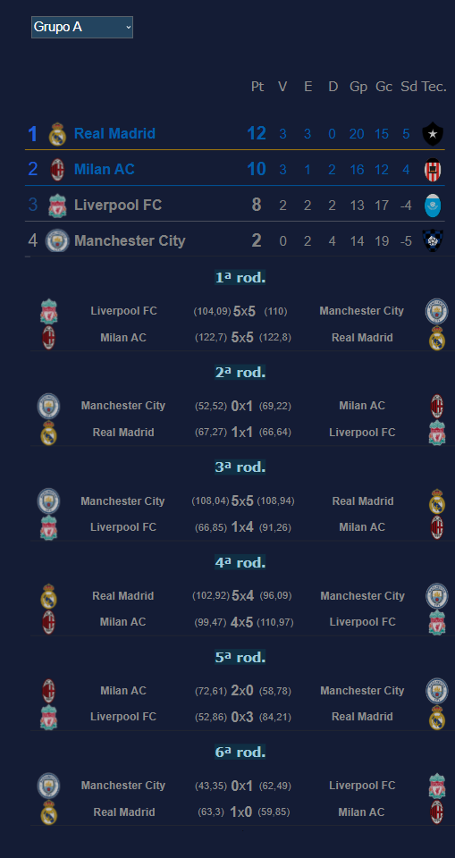
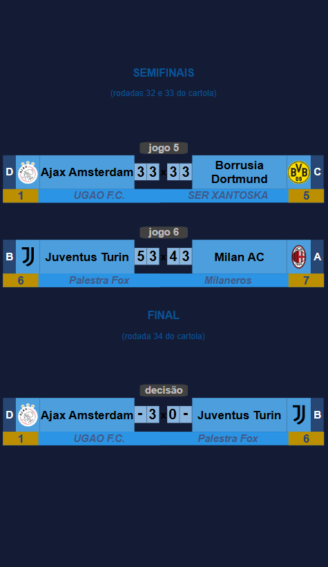
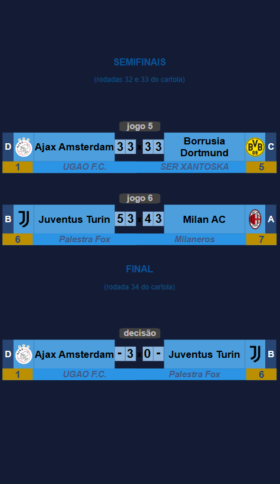

Campeonato de Cartola
A vitória no cartola é o sucesso do seu time!

Redação Cartola - 20/11/2024 - 9h43min

Poucos certames na modalidade copa tiveram título tão merecido quanto foi o do Ajax Amsterdam, que teve a felicidade de ser escolhido pelo cartoleiro Ugo Oliveira, atuando com o login "UGAO F.C"
Na fase de grupos, caiu no quateto "D", ao lado do Bayer Munich, do "Azular FC", Chelsea (Colchonero BH) e PSG (VMRB). Em seis jogos, foram cinco vitórias em sequência, sendo derrotado somente na última partida, diante do Bayer de Munich por 1x0. Os 15 pontos obtidos garantiram a primeira colocação do grupo e a importante condição de melhor campanha geral da primeira fase.
A segunda fase teve como ponto-de-partida o duelo de quartas-de-final justamente contra o Chelsea do "Colhonero BH", que havia classicado em segundo lugar do mesmo grupo "D" em que o Ajax terminou na primeira colocação. Com histórico de duas vitórias na primeira parte do torneio (5x4 e 5x3), a expectativa era de classificação fácil. No entanto, ao perder primeiro confronto por 4x3, Ajax entrou pela primeira vez pressionado a lograr uma vitória a qualquer custo, se realizando num 3x1 que salvou o clube de uma elimnação precoce.
Nas semifinais foi a vez de enfrentar a pedreira Borussia Dortmund, do experiente cartoleiro 'SER XANTOSKA', campeão da Copa Sulamericana 2022. Foram dois jogos duríssimos, com ambos encerrando em igualdade de 3x3, onde o Ajax pode passar em função de melhor campanha que o Borussia na primeira fase.
Na finalíssma contra a Juventus do "Palestra fox", mesmo na vantagem de levar o título com apenas um empate, UGÃO FC apresentou pontuação acima da média, consolidando o título através de uma vitória por xx0. uanto o campeão, a exemplo do vencedor da Libertadrores, ingressa diretamente nas semifinais da competição.
Campeão Ajax faturou 330 reais e 70pts no ranking geral de treinadores, enquanto o treinador da Juventus, Palestra fox, obteve 100 reais. Além disso, clubes finalistas estão automaticamente classificados para a disputa do Mundial de Clubes de Cartola, que inicia na rodada 35, com o vice iniciando desde a primeira fase, enquanto o Ajax, a exemplo do futuro campeão da Libertadores, ingressará na competição a partir das semifinais, ou seja,a dois jogos da confirmação de mais um título em sua sala de troféus.
Parabéns colocolino UGÃO F.C! Abaixo, o quadro completo de todas as fases desta quinta edição.


 
